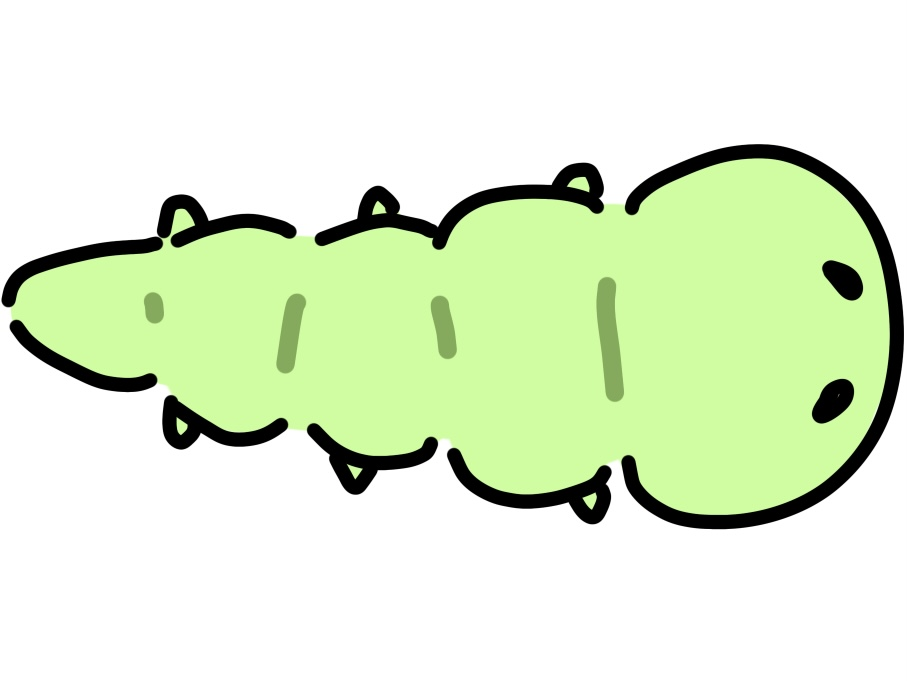
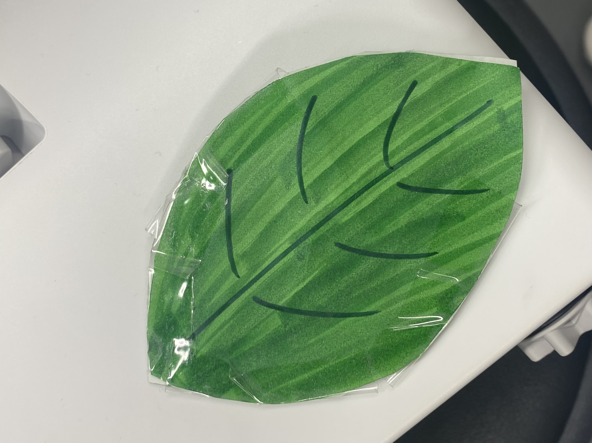

はばたけ！！いもむし！



- 使用技術
- Processing,IRカメラ,IRLED
- 制作年月
- 2024年1月頃
- 作品概要
- いも虫というかわいくない生き物を、蝶という大衆に好かれる生き物にプロディースすることを体験できる作品です。 いも虫にはっぱをあげると蝶に変身します。 プロデュースした蝶は、10色から好きな色を選択できるので愛着を持つことができます。 蝶になるときには変身音がなり、視覚だけでなく聴覚でも楽しめます。 また、周りの音が大きかったら、いも虫や蝶がざわついて逃げまわります。
- 実装方法
- 床にプロジェクターでProcessingで作成したグラフィックスを映し出します。 天井からIRカメラをつるし、葉っぱにはIR LEDが入れることで、 それを天井からつるしているIRカメラから読み取ります。 読み取った画像をProcessingから画像処理することにより、芋虫とのインタラクションを実現しています。
この作品はインタラクティブシステム2という授業でteamLab★Planetsの作品から発展させたインタラクティブシステムを作るという課題でチームで作成しました。私たちの作品は「人と共に踊る鯉によって描かれる水面のドローイング / Drawing on the Water Surface Created by the Dance of Koi and People - Infinity」を発展させて作ったものです。